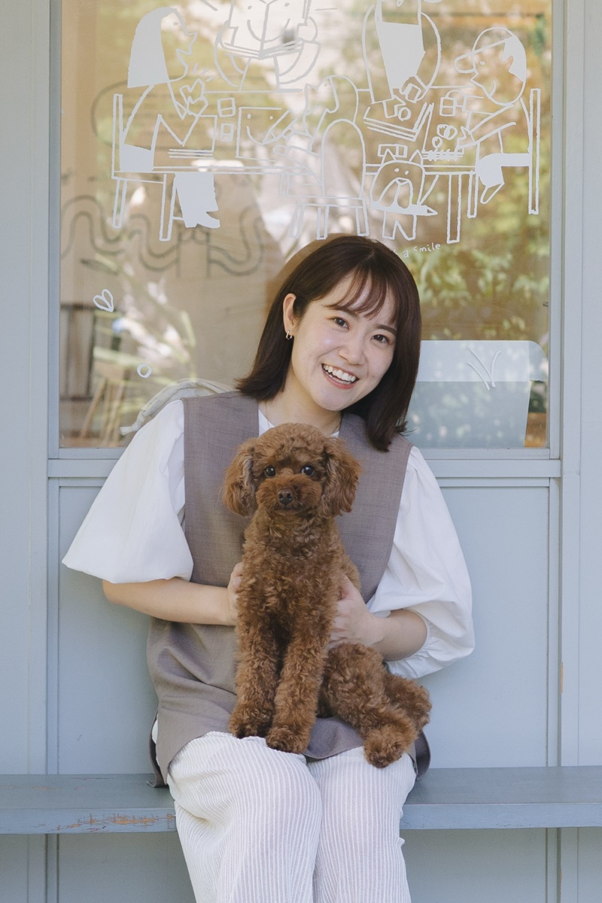

〜 2019
熊本で生まれ、関西で育つ
学生時代はテニス部の部長として、チームをまとめて近畿大会に出場。「目標に向かってやり切る力」はここで育ちました。2019年3月、立命館大学 産業社会学部を卒業。
2019 - 2023
三井住友海上火災保険(株)・営業支援部門
データ分析や記事作成、提案書・チラシの制作を担当。「むずかしいことを、わかりやすく伝える」ものづくりの原点です。
2023 - 2025
オーストラリアへワーキングホリデー
2年間の海外生活で、行動力と度胸をきたえる。滞在中の2024年12月に個人事業主として開業し、Webライティング・SNS運用の仕事をスタート。
2025 - 現在
toC営業で、1年で売上2.8億円
帰国後、業務委託でtoC営業を開始。1年で個人売上累計2.8億円を達成し、約30名の営業部を統率するマネジメントも経験。SNS運用・マーケティング導線設計・オンラインセールス支援の実績は累計700名以上に。
Now
そして、Web制作の世界へ
「売る力」と「伝える力」を、デザインとかけ合わせて。集客までまるごと支えられる制作者として活動中です。
